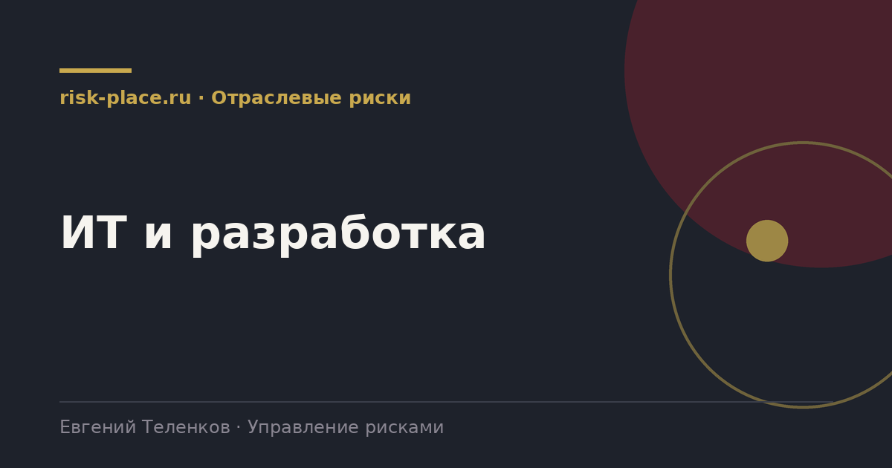

Главная · Библиотека · Отраслевые риски · ИТ и разработка
Библиотека · Отраслевые риски
Отрасль, где риск чаще всего материализуется не как авария, а как срыв срока и накопленный технический долг.

| Группа | Содержание |
|---|---|
| Доступность систем | Отказы инфраструктуры, ошибки при обновлениях, недоступность облачных сервисов |
| Информационная безопасность | Атаки, утечки данных, компрометация учетных записей, вредоносное программное обеспечение |
| Данные | Потеря, повреждение, отсутствие проверенных копий, некорректная миграция |
| Поставщики и лицензии | Прекращение поддержки, изменение условий, невозможность продления, зависимость от одного вендора |
| Проекты внедрения | Срыв сроков, превышение бюджета, неполучение заявленного эффекта, сопротивление пользователей |
| Персонал | Уход ключевых специалистов, отсутствие документации, знание, существующее в одной голове |
| Технический долг | Накопленные упрощения, из-за которых стоимость изменений растет, а надежность падает |
| Соответствие требованиям | Обработка персональных данных, требования к используемым решениям |
Две особенности. Первая, многие ИТ-риски не имеют естественной частоты. Вопрос не в том, как часто происходит атака, а в том, насколько система устойчива и как быстро восстанавливается. Оценка вероятности здесь менее содержательна, чем оценка защищенности и готовности.
Вторая, технический долг это риск с накопительным характером. Он не срабатывает как событие, он постепенно увеличивает вероятность и тяжесть всех остальных рисков. Отражать его строкой реестра можно, но управлять им приходится иначе, через долю ресурса разработки, регулярно выделяемую на его сокращение.
Независимо от размера ИТ-подразделения.
Проекты внедрения информационных систем срываются с устойчивой регулярностью, и причины повторяются. Требования зафиксированы недостаточно, поэтому объем работ растет в процессе. Не выделены ресурсы со стороны бизнеса, поэтому решения принимаются медленно. Миграция данных недооценена, обычно это самая трудоемкая часть. Не спланировано обучение и сопровождение после запуска.
Все четыре причины управляемы на старте и почти неуправляемы в середине. Поэтому по проектам внедрения имеет смысл проводить отдельную стартовую сессию по рискам, а не ограничиваться общим реестром проекта.
Частые вопросы
Одна форма для любого вопроса
Расскажем о ближайших датах, предложим формат под ваш состав участников и назовем порядок бюджета.
Предпочитаете почту — напишите на info@risk-place.ru. Адрес: Москва, улица Скаковая, 32с2.
 risk-
risk-